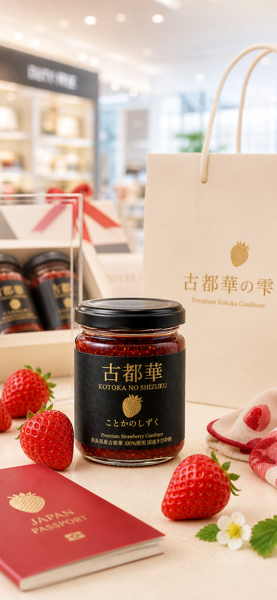

01空港で出会う
訪日客が旅の余韻とともに選べる、奈良発の上質なフードギフト。
Premium Kotoka Confiture
奈良県産ブランド苺・古都華を100%使用。糖度38度前後に仕立てた、 甘み、酸味、香りがほどけるプレミアムコンフィチュール。


A Spoonful of Nara
生の古都華が持つ濃い甘み、凛とした酸味、華やかな香り。その三つの輪郭を、 贈りものとして美しく届くかたちへ整えました。
Gift Journey

01訪日客が旅の余韻とともに選べる、奈良発の上質なフードギフト。
 02
02
黒と金のパッケージが、きちんとした贈答品としての存在感をつくります。
03
オンライン購入導線を備え、思い出した時にまた選べるブランドへ。
Taste Profile
きび砂糖を使い、糖度は38度前後。古都華ならではの香りと酸味を残すことで、 ヨーグルト、パン、チーズ、紅茶にも寄り添う大人の味わいに。
Made in Nara
免税店、百貨店、オンライン購入に対応するためのブランド認知型LP。 C TYPEは、商品写真と購入情報がまっすぐ伝わる構成です。